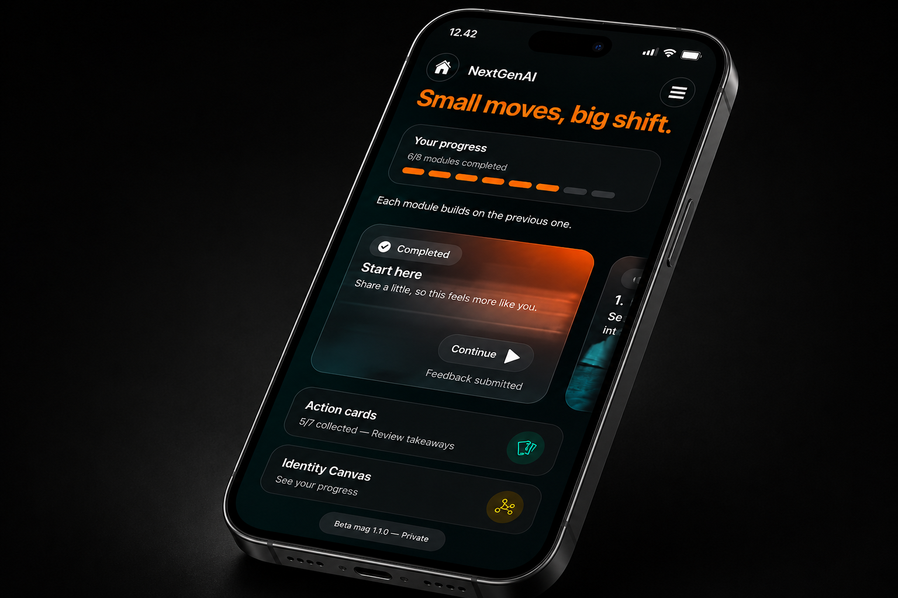

82
käyttäjää
01 Miksi
En tiedä, mihin suuntaan menen.
En tiedä, missä olen hyvä.
En tiedä, mitä teen seuraavaksi.
15–24-vuotiaiden työttömyysasteen trendi,
kesäkuu 2026.
Se on enemmän kuin
pelkkä luku.
Lähde: Tilastokeskus
02 First Five Years
First Five Years tuo AI-valmentajan työelämän ensimmäisiin vuosiin.
AI-valmentaja on tekoälypohjainen palvelu. Käyttäjä keskustelee tekoälyn, ei ihmisvalmentajan kanssa.

03 Ensimmäinen pilotti
käyttäjää
valmennuskeskustelua
viestiä
Nuoret hakivat tukea omaan suuntaan, vahvuuksiin, kehitettäviin taitoihin, työnhakuun ja vaikeisiin tilanteisiin työpaikalla.
Eri käyttäjien keskusteluissa tunnistettiin kymmenen toistuvaa mallia. Havainto osoitti, että yksilöllisestä tuesta voi syntyä myös yhteistä ymmärrystä.
Yhdelle nuorelle
se on keskustelu.
04 Yhteinen näkymä
Yksittäinen keskustelu kuuluu käyttäjälle. Yhteinen näkymä syntyy vasta, kun sama ilmiö toistuu useissa toisistaan erillisissä keskusteluissa.
Signaali voi liittyä työnhakuun, palvelukatkokseen, johtamiseen, työpaikan käytäntöön tai siirtymään koulutuksesta ja palveluista työhön.
Tarkoitus ei ole selittää ihmistä vaan tehdä näkyväksi ympäristö, jossa hänen pitäisi päästä eteenpäin.
05 Päätöksenteon näkymä
Työmarkkinatilastot kertovat, mitä tapahtui. Toistuvat signaalit voivat auttaa ymmärtämään, miksi.
First Five Years selvittää, voisiko koottu ilmiötieto täydentää nykyisiä tilastoja ja palautetietoa. Se voisi auttaa tunnistamaan kohtia, joissa palvelu, johtamiskäytäntö tai työelämän siirtymä ei kanna.
Tavoitteena ei ole tehdä yhden pilotin perusteella kansallisia johtopäätöksiä. Rakennamme ja testaamme menetelmää, jolla signaalien luotettavuutta voidaan arvioida.
Päättäjälle arvo on aikaisempi tilannekuva: parempi peruste kohdentaa kokeiluja, tutkimusta ja resursseja sinne, missä nuorten työelämään kiinnittyminen horjuu.
Seuraava kokeilu
Seuraava vaihe testaa, toistuvatko ensimmäisen pilotin havainnot suuremmassa ja erilaisessa käyttäjäjoukossa.
07 Taustalla

Amin Hassan
Amin työskentelee henkilöstökokemuksen, osaamisen kehittämisen ja tekoälyn parissa. Hän on tehnyt pitkään työtä yhdenvertaisemman työelämän ja nuorten uramahdollisuuksien parissa sekä osallistunut työelämästä käytävään yhteiskunnalliseen keskusteluun.

Heikki Leskinen
Heikki on sarjayrittäjä ja strategiakonsultti, joka on keskittynyt uuden sukupolven johtamiseen ja nuorten osaajien rooliin yritysten kehittämisessä. Hän on perustanut The NextGen Projectin ja vetää NextGenAI-ohjelmaa.
Yhteistyössä
AI-valmentajan tarjoaa Adaptive Works. Yhteistyössä kehitetään nuorelle tarjottavaa valmennusta sekä tapaa tunnistaa keskusteluista laajempia työelämään kiinnittymisen ilmiöitä.
08 Pelisäännöt
Käyttäjälle kerrotaan selkeästi, ettei AI-valmentaja ole ihminen.
Ei pisteitä, persoonallisuusluokituksia eikä työllistymisennusteita.
Yhteinen näkymä perustuu koottuihin havaintoihin, ei yksittäisten keskustelujen julkaisemiseen.
Datan käytöstä voi vetäytyä ilman, että AI-valmentajan käyttö estyy.
Sitä ei myydä eikä luovuteta kolmansien osapuolten profilointiin.
09 Yhteys
Kutsumme mukaan julkisen sektorin, työnantajat, tutkijat, rahoittajat ja nuorten kanssa työskentelevät toimijat. Rakennetaan yhdessä ilmiö, joka muuttaa työelämän alun näkyväksi.